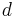
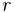
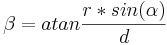
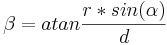
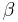

Parallasse
Introduzione

Se si scatta la stessa scena da un punto anche lievemente diverso, gli oggetti sullo sfondo risulteranno traslati in relazione a quelli in primo piano, come accade nell'immagine di esempio riportata.
L'errore di parallasse si verifica nelle fotografie panoramiche se la fotocamera e l'obiettivo non vengono ruotati attorno alla pupilla di ingresso dell'obiettivo. Una differenza causata dall'errore di parallasse sarà visibile nella zona di sovrapposizione fra due immagini adiacenti.
Gli errori di parallasse possono essere molto complessi da rimuovere, dato che i dettagli dello sfondo possono essere oscurati da elementi in primo piano. Un metodo utile per correggere questo tipo di errori consiste nell'"inventare" gli oggetti sullo sfondo.
Calcolo
L'errore di parallasse è in funzione della distanza dell'oggetto , della posizione del punto
nodale  e della metà dell'angolo di rotazione fra i due scatti successivi, denominato
 . Quindi, metà angolo di parallasse
. Quindi, metà angolo di parallasse  sarà:
sarà: 
Dato che generalmente è sensibilmente più grande di  , la formula precedente può anche scriversi come 
, la formula precedente può anche scriversi come 
 si applica, in direzione opposta, a entrambe le immagini che si sovrappongono,
quindi il valore deve essere raddoppiato per ottenere l'effettivo errore di parallasse. A questo punto è possibile stimare l'errore massimo in pixel
che affliggerà il panorama (di larghezza pari a Panorama Width) che si intende creare: per un panorama a 360° (e espresso in gradi)
questo è semplicemente 
Esempi
Se si scattano 4 foto nelle 4 direzioni ortogonali, risulta essere pari a 45°.
Se si considera un oggetto posto a 1m di distanza dall'obiettivo, l'errore massimo di parallasse (relativo all'infinito) sarà, per uno spostamento
del punto a parallasse nulla:
| 8000px larghezza | 12000px larghezza | |
|---|---|---|
| 1mm | 1,8px | 2,7px |
| 5mm | 9px | 14px |
| 10mm | 18px | 27px |
| 20mm | 37px | 55px |
Se si scattano invece 6 foto che coprono 360°, sarà pari a 30°. Se si considera poi un
oggetto posto a 2m dall'obiettivo, il massimo errore di parallasse (relativo a infinito), si avrà per uno spostamento del punto a parallasse nulla:
| 8000px larghezza | 12000px larghezza | |
|---|---|---|
| 1mm | 0,6px | 1px |
| 5mm | 3,2px | 4,8px |
| 10mm | 6,4px | 9,6px |
| 20mm | 13px | 19px |
Vedere anche
- Punto a parallasse nulla
- Riparare agli errori di parallasse con lo strumento "inclina"
- Database delle pupille di entrata
- Teste panoramiche